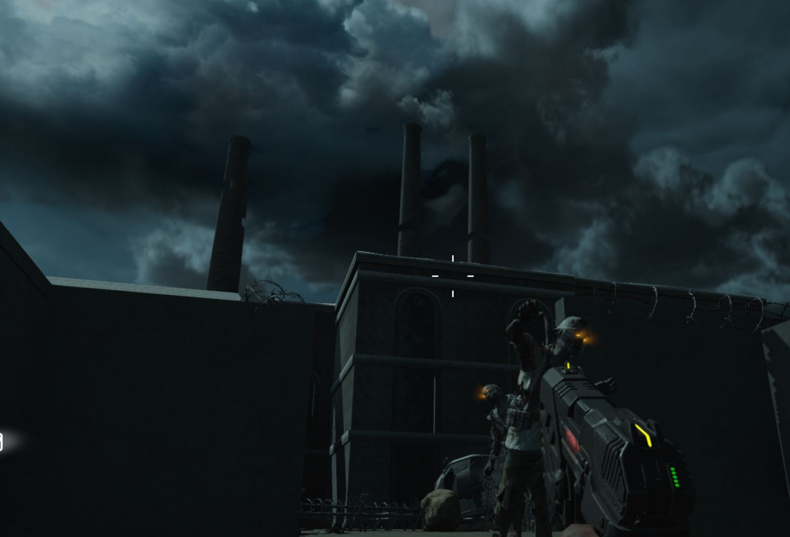
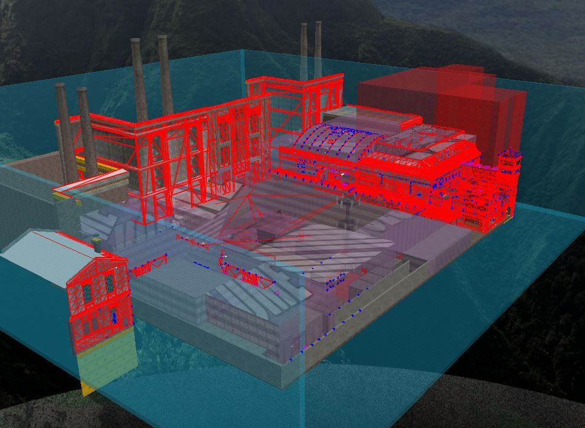
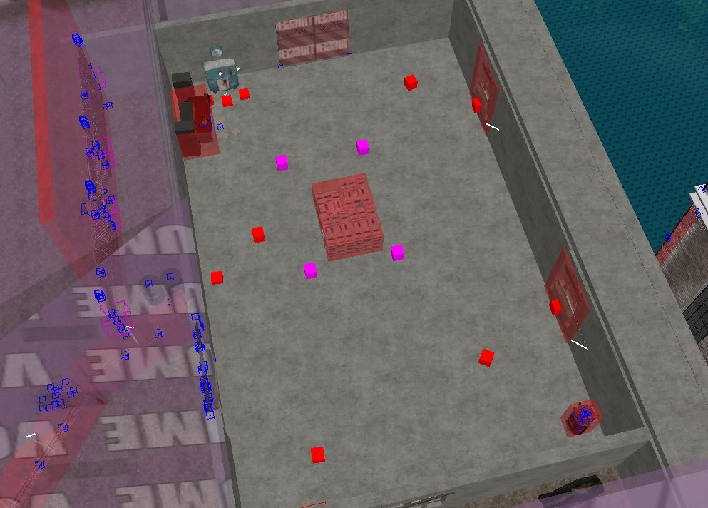

Die Haft is a mod for Call of Duty: Black Ops 3 that I made for fun in my spare time. It adds a brand new map that I designed myself, but it is still undergoing updates. Here is a link to it on the Steam Workshop: HERE
This mod is a brand new map I made for Call of Duty: Black Ops 3 zombies mode. In it you fight against endless hoards of zombies finding and upgrading your aresenal to better defend yourself. The game is split up into rounds where each round increases in difficulty by adding more health and more zombies. The player gains points by shooting the zombies or repairing barricades that they can spend on accessing more of the map, buying new weapons, or buying special perks that increase their combat capabilities.

I made this mod using Call of Duty: Black Ops 3's provided mod tools as well as the software Radiant for the level design. Overall, it was a very educational process to learn how to build levels and I enjoyed getting a sneak peak into the intracacies of one of my favorite games.
 Once the player becomes overwhelmed by zombies, a game over message appears displaying the round the player reached, their score, headshots, and downs